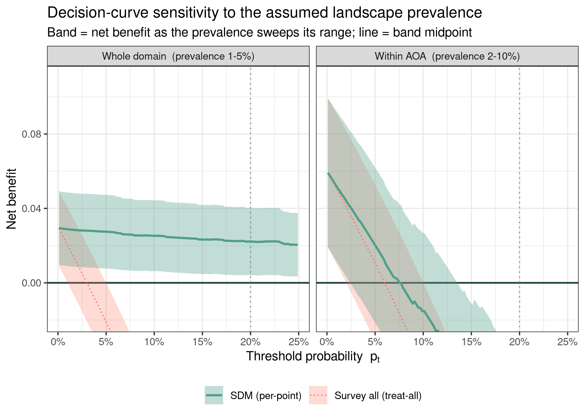
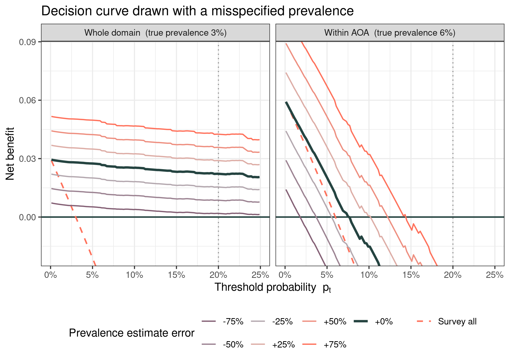

Appendix 3 - How much do errors in the assumed prevalence change the decision curve?
Situation. Every decision curve is anchored to an estimate of the taxon’s landscape prevalence \(\pi\). However, the true prevalence is unknown; and expected to higher inthe AOA than across the whole domain. Hence, the user chosen prevalence might affect the estimated net benefit from the DCA curve. Here we determine the affect the accuracy of the prevalence estimate has on DCA curves.
Experiment. Using the per-point method, we recompute the decision curve for the example model across a plausible prevalence band in each context: 1–5% across the whole domain and 2–10% within the AOA. For each context we swept \(\pi\) across its band and recorded, at every threshold, the envelope of net benefit the SDM delivers and the envelope of the survey-all reference. The width of each envelope is the sensitivity of the curve to the prevalence assumption; whether the SDM envelope stays above both references is whether the decision is sensitive to it.
Result. The two contexts have different sensitivity to prevalence uncertainty. Across the whole domain the SDM envelope is narrow and sits entirely above both references through the whole decision-relevant range — at the “survey five to find one” threshold it spans only about 3.6 percentage points of net benefit and never drops to the survey-none line. The decision is robust: anywhere in the 1–5% band the model is worth using.
Within the AOA the same sweep produces a much wider envelope (about points at the same threshold). At the optimistic (10%) end of the band the in-domain curve keeps clear benefit through the relevant thresholds, but at the pessimistic (2%) end its lower edge drops below survey-none almost immediately (p_t ≈ 2%). The in-domain comparison retains only the hard absences, and net benefit scales with how much there is to find, so the curve is far more exposed to the prevalence estimate.
A fixed-fraction view: a central estimate that is off by a set amount
The band above shows what happens across a wide range of plausible prevalences. A practitioner usually has a single working estimate and a worry of a different shape: my estimate is probably in the right neighbourhood, but it could be off by a quarter, a half, three-quarters. A manager who records 3% in the AOA when the truth is 6% has not used an implausible value, just one that is 50% low. Here we fix a central true prevalence in each context (3% whole domain, 6% within AOA) and redraw the curve as the submitted estimate departs from it by ±25%, ±50% and ±75%.
Because the per-point action at a threshold does not depend on prevalence, misspecifying it does not change which sites you survey; it only distorts the net benefit you should anticipate. This distortion is small where there is little to find and large where there is more: across the whole domain even a 75%-low estimate keeps the curve above survey-none throughout, so the model stays clearly worthwhile. Within the AOA the break-even threshold, where the drawn curve meets survey-none, moves from about 8% at the true 6% to roughly 4% if the estimate is 50% low and 12% if it is 50% high, so a modest error slides the apparent range of useful thresholds up or down by a meaningful margin.

Conclusion. It is worth buffering occurence points, to estimate the prevalence, and to calculate the area of AOA, using a GIS, to refine estimates. Where the curve stays clear of the survey-all and survey-none references, as across the whole domain here, both a wide plausible range and a sizeable error in a central estimate leave the recommendation intact. Within the AOA, whose narrower, harder comparison makes net benefit scale steeply with prevalence, the same uncertainty moves the break-even threshold enough to change the advice; pin the prevalence down before trusting the curve at selective thresholds. In every case the prevalence estimate changes the net benefit you expect, not the sites the model tells you to survey at a given threshold.